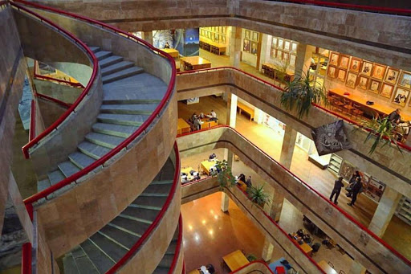

Ivan Savchuk
Hi, I am Ivan Savchuk. I am a student from the capital of Ukraine the great city Kyiv. I attend Igor Sikorski Kyiv Polytechnic University, and study at Applied Mathematics Faculty I have great times here.
As a student of such faculty I am really keen on some mathematical things like Calculus, Algebra, Optimization, Data Analysis etc. Mathematics is my passion, but I like everything that can encourage me to do something or learn something new.
I am kind of person that enjoy sport activities such as running, fitness exercizes or playing basketball. Sports help me to relax and return to the problems what I face with refreshed body and mind.
Talking about personality I am a team player that always can help mates with any kind of problems evem if I have to study material to help, also I enjoy teamwork, with my friends we often can spend hours in marvelous KPI library on programming or on some sort of math, we really enjoy the process.
Education
As mentioned above, I am student of 4th course Igor Sikorski Kyiv Polytechnic University and study at Applied Mathematics Faculty.
I have studied such disciplines as:
- Calculus
- Algebra
- Statistics
- Data Analysis
- Random processes
- Database Design and Information Systems
- Optimization
There are several courses that I attended on Coursera platform, such as:
- Deep Learning
- Tensor Flow
- Python for Machine Learning
- Software Design
- Web Design
And a few more, check out my LinkedIn profile to see full list of my finished courses.
Projects
I have a few projects done yet, such as Information System wich help to order tickets to the cinema.
This system provide functionality both to user and to owner of system. Owner can track transactions and view system statistics visually.
Anouther one is mini game project. It's game called Black Jack where user plays against computer.
Resume
This is my CV.